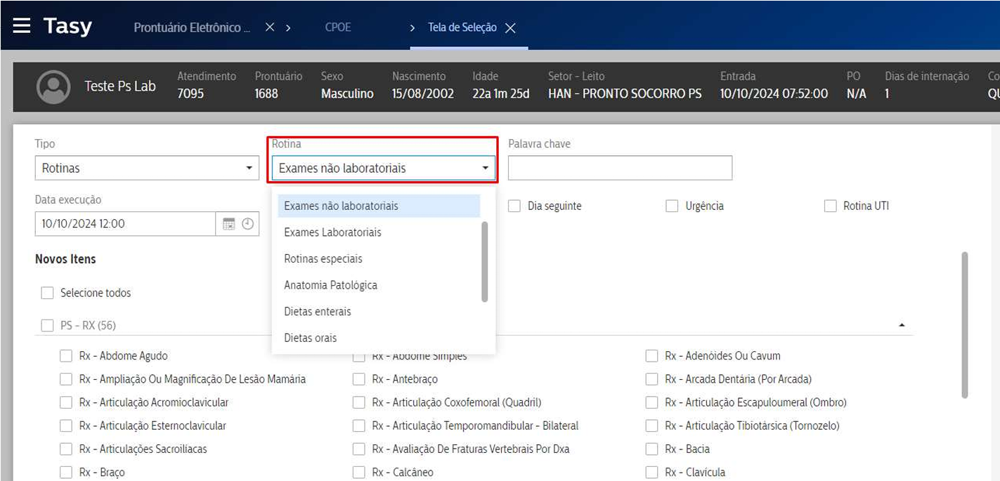
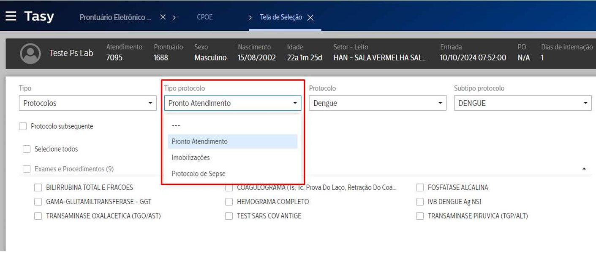
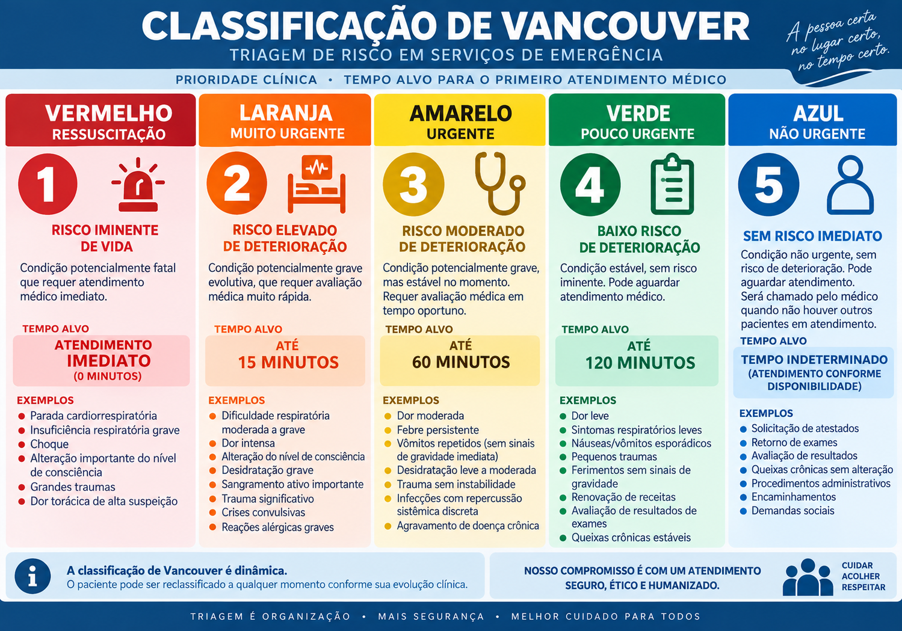

Relatório de análise operacional Mantevida - Pronto-socorro pediátrico (L2 Norte)
Fluxo de trabalho
O sistema Tasy comporta a automatização de prescrições conforme protocolos, ferramenta ainda não usada:


Plantões matutinos durante a semana
Tempo médio de passagem de enfermaria: 5h.
Mapa de calor
Quantidade de pacientes chamados por plantonista em cada horário matutino em dia útil:
block-beta
columns 15
t1["07h"]
t2["07:30"]
t3["08h"]
t4["08:30"]
t5["09h"]
t6["09:30"]
t7["10h"]
t8["10:30"]
t9["11h"]
t10["11:30"]
t11["12h"]
t12["12:30"]
t13["13h"]
t14["13:30"]
t15["14h"]
p1["1"]
p2["1"]
p3["1"]
p4["1"]
p5["1"]
p6["1"]
p7["2"]
p8["5"]
p9["2"]
p10["2"]
p11["4"]
p12["7"]
p13["7"]
p14["6"]
p15["5"]
classDef low fill:#d9f0d3,stroke:#aaa,color:#000
classDef medium fill:#fee08b,stroke:#aaa,color:#000
classDef high fill:#f46d43,stroke:#aaa,color:#000
classDef veryhigh fill:#d73027,stroke:#aaa,color:#fff
class p1,p2,p3,p4,p5,p6,p9,p10 low
class p7 medium
class p8,p11 high
class p12,p13,p14,p15 veryhigh
Observa-se uma sobrecarga transicional do fim do plantão matutino, com acúmulo de pacientes por plantonista.
A carga por plantonista é maior em praticamente todos os dias, tendo em vista a ausência do segundo plantonista enfermarista.
Icterícia neonatal
O retorno de pacientes com quadro ictérico é aumentado na L2 Norte pela presença da maternidade no local.
Os pais estão habituados à visitas constantes à unidade porque, em geral, a mãe faz todo acompanhamento obstétrico no mesmo local.
Retornam, em mais de 90% dos casos, por ictéricia mínima, insegurança do pediatra ambulatorial ou receio em geral.
Em cerca de 6% dos casos a ictéricia tem valor de fototerapia.
xychart-beta
title "Retornos por icterícia neonatal — média mensal"
x-axis ["Sem necessidade de PS", "Indicação de fototerapia", "Icterícia colestática"]
y-axis "Percentual dos retornos (%)" 0 --> 100
bar [90, 8, 2]
Claramente, não se trata de uma demanda que atrapalhe o fluxo normal dos atendimentos. Porém, os pais são demandantes de exame. Apesar das indicações de literatura médica, todos tem receios da evolução do quadro e solicitam bilirrubinemia sérica.
Fluxo proposto
Fazer uso da triagem de não urgência (AZUL)
- Iniciar triagem azul para os pacientes com queixa de icterícia e orientar enfermagem a informar ao médico se tratar de queixa única e paciente estável.
- Médico solicitar bilirrubinemia e outros exames antes do antedimento.
- Paciente retorna com orientação de atendimento triagem AZUL (sem tempo de espera definido), devendo aguardar atendimento dos pacientes triados em maior gravidade.
Além disso, há clara necessidade de orientar melhor o paciente na alta do alojamento conjunto de que haverá uma icterícia normal, branda, reconhecer seu progresso e orientar os pais a registrarem fotos diárias do pacinete em luz natural para análise médica no retorno, se necessário.
Orientar todos os médicos (alojamento conjunto e pronto-socorro) a imprimir curva de icterícia por tempo de vida do Ministério da Saúde ou OMS e grampear na caderneta da criança.
Triagem em ordem invertida
Há cerca de um mês e meio o pronto-socorro opera em triagem invertida, com abertura de ficha cadastral antes da classificação de risco.
Todos os médicos e outros profissionais de saúde envolvidos podem responder criminalmente segundo os termos do artigo 135-A do Código Penal Brasileiro:
Art. 135-A. Exigir cheque-caução, nota promissória ou qualquer garantia, bem como o preenchimento prévio de formulários administrativos, como condição para o atendimento médico-hospitalar emergencial: (Incluído pela Lei nº 12.653, de 2012).
Pena - detenção, de 3 (três) meses a 1 (um) ano, e multa. (Incluído pela Lei nº 12.653, de 2012).
Parágrafo único. A pena é aumentada até o dobro se da negativa de atendimento resulta lesão corporal de natureza grave, e até o triplo se resulta a morte. (Incluído pela Lei nº 12.653, de 2012).
Este fluxo invertido é fruto de desantenção e desqualificação do apoio jurídico do hospital.
Além disso, os pacientes entendem como tempo de espera toda a duração desde o momento que entram no hospital até o atendimento médico. Esta ordem invertida dilata este tempo porque uma vez com fichas iniciadas, muitos se perdem pela unidade ou não buscam a triagem correta a tempo.
Sinalizações no nosocômio
A unidade hospitalar da Asa Norte L2 não conta com sinalização clara da classificação de níveis de emergência de Vancouver. Sem uma placa afixada, há uma cultura entre os pacientes mais frequentadores de solicitarem atendimento direto, adentrarem consultório, avançarem sobre o box de emergência para constatar nível de lotação etc.
Propostas:
- Placas claras, grandes, com identificação por cor e nome da cor e tempo de espera.
- Iniciar uso da classificação AZUL.

Guias dos planos de saúde
Atualmente os médicos assinam, durante os atendimentos, a ficha guia do plano de saúde, vinculada ao atendimento.
Porém, esta obrigação legal se faz sobre o responsável técnico imediato ou representante legal do quadro médico respectivo daquele atendimento.
Estas fichas estão circulando pelo hospital com a história clínica e prescrições dos pacientes anexadas, em clara violação do Código de Ética Médica:
É vedado ao médico:
Art. 73. Revelar fato de que tenha conhecimento em virtude do exercício de sua profissão, salvo por motivo justo, dever legal ou consentimento, por escrito, do paciente.
Protocolos pediátricos
Atualmente, o corpo de protocos clínicos propostos são engessamentos da conduta médica, outra clara violação ético-médica.
Propostas:
- Hospedar uma página de internet, site, com fluxos propostos para quadros mais típicos.
- Afixar junto ao box de emergência os fluxos do PALS mais recente, plastificados.
Tasy
O sistema Tasy é globalmente utilizado e se trata de um sistema avançado.
Porém, seu uso exige a figura de um preposto nomeado ou representado pelo próprio responsável técnico para comunicação junto ao corpo de Tecnologia do hospital.
Existem inúmeros ajustes necessários para pediatria: via inalatória para adrenalina, avisos de doses máximas, salvar prescrições padrões, ajustes em volume de infusão e injeção intramuscular etc.
Proposta: posso me voluntariar a fazer interface com equipe de TI para ajustes no Tasy.
Adendo: se faz mandatório criar uma fórmula Holliday-Segar padronizada para a equipe e gravar um vídeo instrutivo de como criá-la no Tasy.
- Pega plantão
- Aesclepius
- Adaptações de escala
- Ficha triando após guichê, aumentou tempo de espera.
- Triagem triagem triagem triagem
- triagem adiantar bilirrubina, tirar consulta desenvolvimento etc
- outros hospitais tem placa orientando triagens
- fusex tá pagando?
- assino direto um monte de ficha. Não era o coordenador?!
- pagamento o certo é PS primeiro
Ajustes
- Protocolo de sepse pediátrico.
- Criar protocolos diferentes junto ao laboratório. Ajustes Tasy:
- Via inalatória para soros hipertônicos e adrenalina.
- Tirar aviso de bomba de infusão que sai em algumas prescrições
- Criar padrão de manutenção Holliday